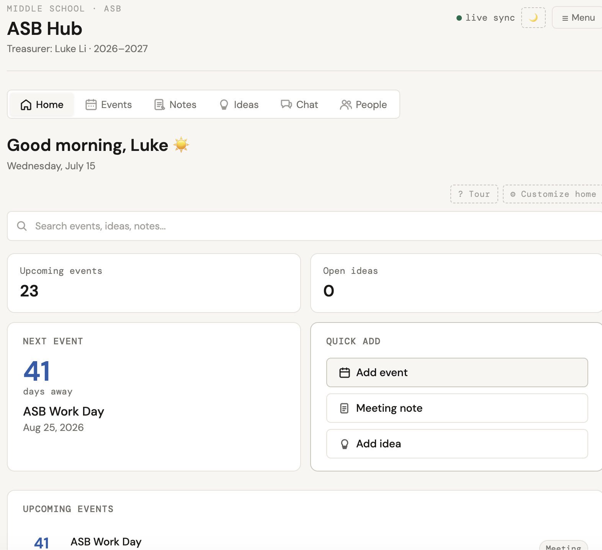
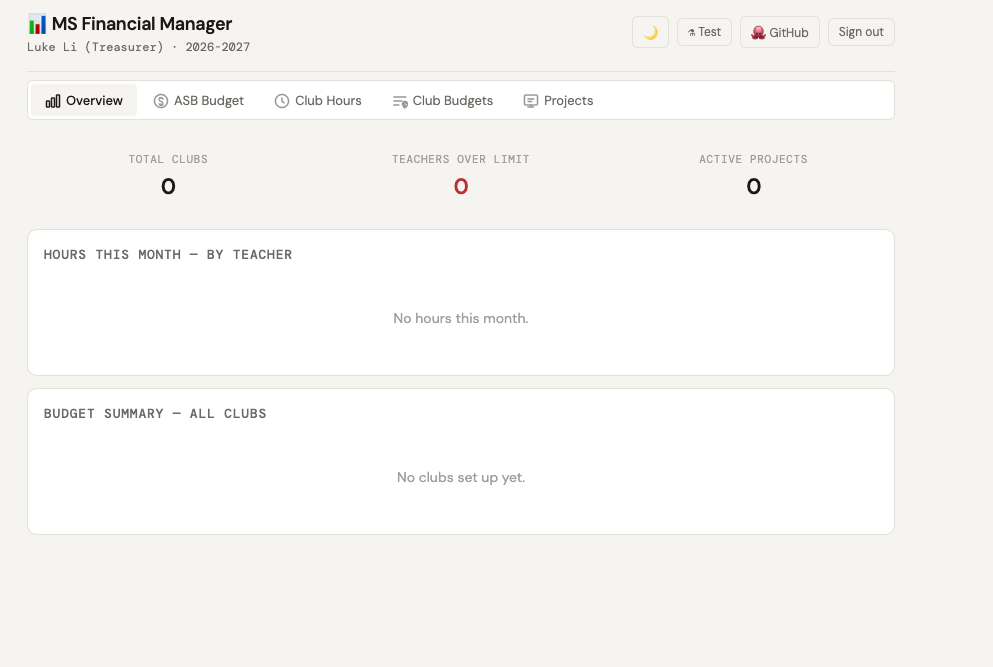

about
I'm a student developer and entrepreneur. I like building real, working things — a web app for a school organization, a small product business — and picking up whatever skill the project needs along the way.
Currently working with Firebase and JavaScript, and learning Python.
projects

ASB Hub
active
firebase · js
Web app for my school's student leadership program — events, notes, ideas, chat, and a people directory for the whole ASB team.

Financial Manager
in progress
firebase · js
Companion tool for tracking club budgets, hours, and funding requests, kept separate for access control on financial data.